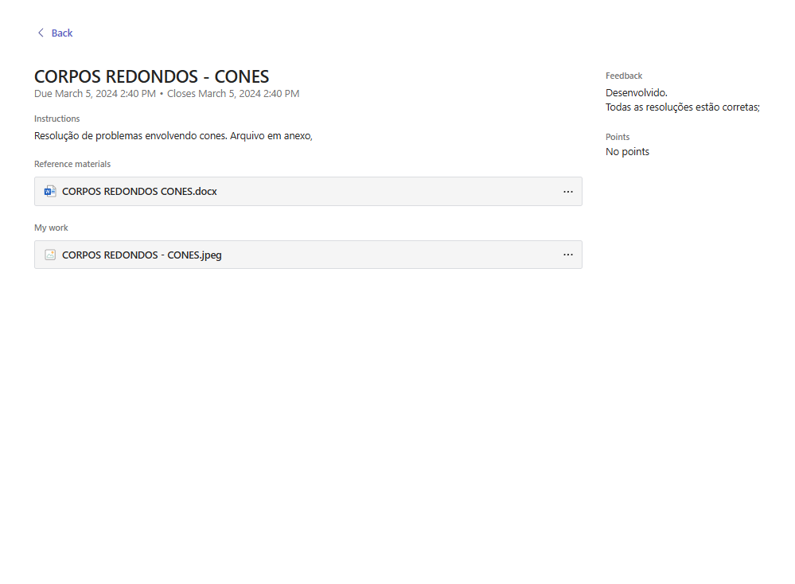

Disciplinas
Matemática
Matemática é a ciência que estuda padrões, estruturas, números, formas e suas interações, utilizando raciocínio lógico e abstrato.
Tarefa favorita


Retornar ao hub, Clique Aqui